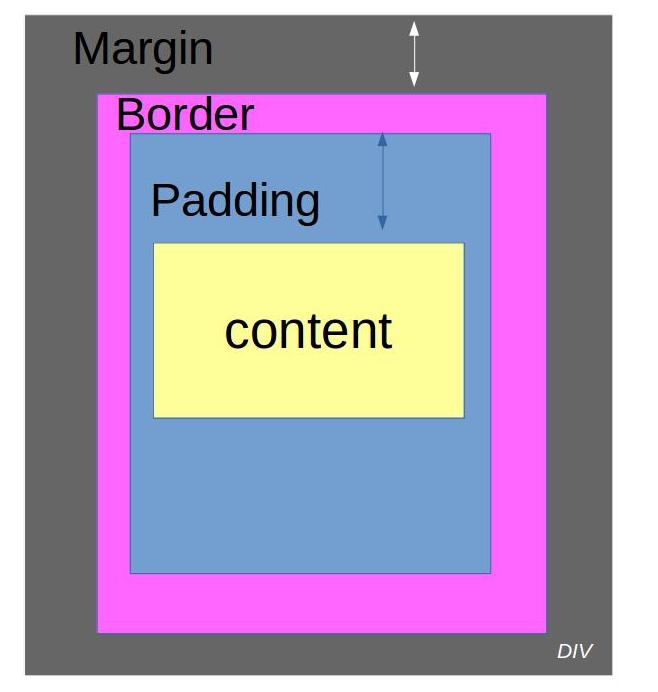

Un sélecteur est un attribut qui permet de cibler un élément dans le HTML. Pour ce faire il faut au prealable
créer une "class" ou un "id". Pour utiliser une "class" en CSS on utilise le "."(point), et pour utiliser un "id" on utilise "#".
Proprietes et valeurs CSS courantes
La syntaxe de base du CSS est celle-ci :

Dans le Css il y a une longue liste de proprietes disponible en voici une petite partie !
Les proprietes de mise en forme du texte
- "font-family"
Permet de changez la police de notre contenu.
Pour le changez que pour un seul element ou une selection de plusieurs elements dans notre page web par exemple
la balise "P" il faut indiquer le "selecteur" dans notre CSS

- "@font-face"
Permet d'inclure une police telecharger ou juste avec le lien vers le site
l'incoveniant de mettre un lien vers un site est de soumettre un telechargeme aux utilisateurs du site
alors qu'en mettant votre chemin de votre police dans votre dossier il sera toujours present et visible par les utilisateurs
- "font-size"
Valeurs possibles: 1em, 1px, 1%
Permet de definir la taille de la police.
- "font-weight
Valeurs possibles:bold, normal
Cette propriété met en gras le texte sélectionné
- "font-style
Valeurs possibles:italic, normal
Cette propriété met en italique le texte sélectionné
- "text-decoration"
Valeurs possibles:underline,overline,blink
Cette propriété souligne ou barre ou fait clignoter le texte.
Les proprietes de couleur
- Propriété "color"
Valeurs possibles: RGB, hexadécimal
Cette propriété définit la couleur du texte.
- Les proprietes de fond "Background"
Valeurs possibles:Super-propriété contenant "Super-propriété contenant
"background-size"(1em,1px ou 1%),"background-image"(img)
,"background-color"(RGB, hexadécimal)
Cette propriété souligne ou barre ou fait clignoter le texte.
- Les proprietes des bordures "Border"
Valeurs possibles:Super-propriété contenant "border-width"(1em,1px ou 1%),"border-style"(solid,dashed, dotted)
,"border-color"(RGB, hexadécimal)
Cette propriété entoure le contenu par une bordure.
Padding et margin:
Pour chaque bloc html on peut définir l'espacement qui le séparera des autres éléments (margin)
et les espacements intérieurs (padding).

Margin: La marge externe définit l'espace entre le bloc et son extérieur,
Cette dernière spécifie d'un coup la valeur de la marge pour les quatre côtés à la fois.
On peut aussi specifier une valeur en pourcentage ou en pixel
pour l'un des quatre coté .
Le padding est une zone, appelée aussi "marge interne" .
Elle est utilisée pour entourer de marge le "contenu" à
l'aide de 4 valeurs.
La padding permet aussi de definir un distance entre des élément .
En voici un exemple
- padding-top : marge intérieure en haut
- padding-bottom : marge intérieure en bas
- padding-left : marge intérieure à gauche
- padding-right : marge intérieure à droite
Presentation de Flexbox
Introduction
Flexbox est un module CSS utilise pour la mise en page.
Flexbox est organise selon un systeme bloc/element.
Le principe est simple : un bloc quelconque auquel est applique la propriete ''display''
et la valeur ''flex/inline-flex'' est defini en tant que conteneur flex.
Les elements a l'interieur de ce conteneur flex peuvent alors etre agences selon les
proprietes flexbox.
La syntaxe de base est celle-ci :

Liste non-exhaustive des proprietes et valeurs Flexbox
Les proprietes applicables aux conteneurs
- Propriete ''display'' :
Valeurs possibles : flex, inline-flex.
Cette propriete definit un conteneur flex, de type bloc
avec la valeur ''flex'' ou de type inline avec la valeur
''inline-flex''.
- Propriété ''flex-direction''
Valeurs possibles :row, row-reverse, column, column-reverse.
Cette propriété définit l'axe et la direction où sont placés les éléments du bloc.
En ligne de gauche à droite pour ''row'' et de droite à gauche pour ''row-reverse'', en colonne de haut en bas pour
'' column'' et de bas en haut pour ''column-reverse''.
- Propriété ''flex-wrap''
Valeurs possibles :nowrap, wrap, wrap-reverse.
Cette propriété définit l'agencement en ligne des éléments.
Sur une seule ligne avec ''nowrap'', sur plusieurs avec
''wrap'' de haut en bas et de bas en haut avec ''wrap-reverse''.
- Propriété ''justify-content''
Valeurs possibles :flex-start, flex-end, center, space-between.
Cette propriété définit la répartition de l'espace entre les éléments.
- Propriété ''Flex-start''
Les éléments sont groupés au début du
conteneur, le bord du premier élément aligné avec le bord
du conteneur.
- Propriété ''Flex-end''
Les éléments sont regroupés à la fin du
conteneur, le bord du dernier élément aligné avec le bord du conteneur.
- Propriété ''Center''
Les éléments sont groupés au centre du conteneur
- Propriété''Space-between''
Les premiers et derniers élément
sont alignés aux bords du conteneur, l'espace entre les éléments étant égaux
Les propriétés applicables aux éléments
- Propriété "Order"
Valeurs possibles : nombre entiers
Cette propriété définit l'ordre d'affichage des
éléments selon leur nombre, en ordre croissant.
- Propriété ''flex-grow''
Valeurs possibles : nombre entiers
Cette propriété définit la capacité d'un élément à grossir, en fonction de son nombre
et de celui des autres éléments. Un élément défini à 2 et les autres à 1 pourra prendre
deux fois plus d'espace que les autres.
- Propriété ''flex-shrink''
Valeurs possibles : nombre entiers
Cette propriété complémentaire à la propriété
''flex-grow'' définit la capacité d'un élément à
rétrecir, en fonction de son nombre et de celui des autres éléments. Un élément défini à 2 et les autres à 1 pourra se réduire de moitié.